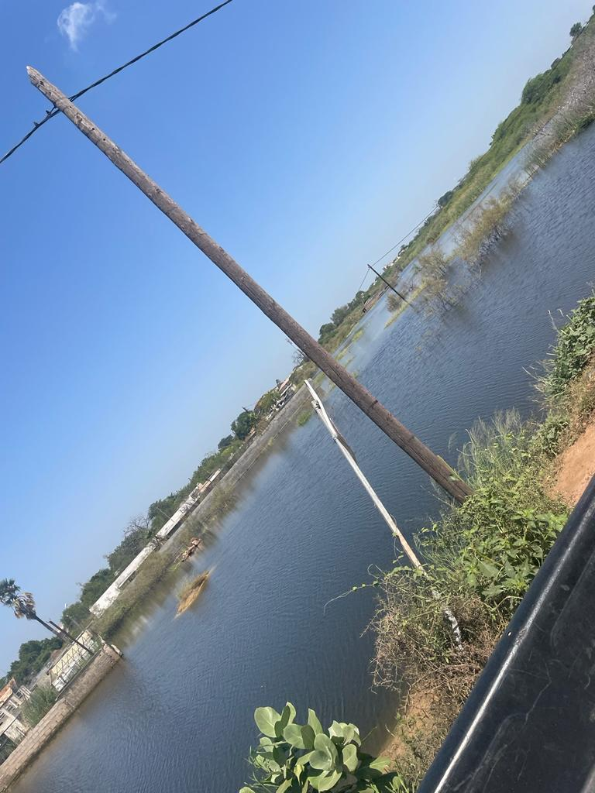

Le Challenge Sama-Dekkuway est une invitation à tous les esprits créatifs et aux développeurs passionnés de contribuer à la résolution d’un problème crucial.

Recueillir des propositions innovantes destinées à orienter les
futurs acquéreurs de terrains pour leur éviter d’investir dans des
zones inondables, non constructibles ;
Promouvoir des solutions nouvelles pour le partage des données
sur la cartographie des zones d’inondations afin de garantir une large
diffusion des produits du PGIIS sur l’amélioration de la connaissance
du risque d’inondation.
Réalisation : Décembre 2023, Pape Souleymane Diop, diopsoulj@gmail.com